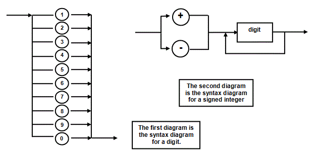

<div id="jsn-maincontent" class="span9 order1 row-fluid">
  <div id="jsn-maincontent_inner">
    <div id="jsn-centercol">
      <div id="jsn-centercol_inner">
        <div id="jsn-mainbody-content" class="jsn-hasmainbody">
          <div id="jsn-mainbody-content-inner1">
            <div id="jsn-mainbody-content-inner2">
              <div id="jsn-mainbody-content-inner3">
                <div id="jsn-mainbody-content-inner4" class="row-fluid">
                  <div id="jsn-mainbody-content-inner" class="span12 order1">
                    <div id="jsn-mainbody">
                      <div id="system-message-container"></div>

                      <div
                        class="item-page"
                        itemscope
                        itemtype="https://schema.org/Article"
                      >
                        <meta itemprop="inLanguage" content="en-GB" />

                        <div itemprop="articleBody">
                          <p></p>
                          <h1 style="text-align: center">Syntax diagrams</h1>
                          <p>
                            <strong style="line-height: 1.5"
                              >Syntax diagrams<br /></strong
                            ><span class="NormalContent"
                              >Another way of representing the syntax of
                              keywords, instructions and the elements of a
                              programming language is to use syntax diagrams.
                              These are possibly more straightforward to
                              understand than BNF notation. They are very useful
                              to the programmer because they can be used to
                              ensure that the correct syntax of instructions and
                              declarations, for example, are used.</span
                            >
                          </p>

                          <p align="left">
                            Consider the BNF definition of a signed integer.
                            This is an unsigned integer with either a plus or a
                            minus in front of it.
                            <strong
                              >There are different ways of solving this</strong
                            >
                            but one way is as follows:
                          </p>
                          <p align="left">
                            <br />
                            <br />
                            A signed integer could also be represented using a
                            syntax diagram. Again, there are different ways of
                            representing the same logic. Here is one way, using
                            2 diagrams.
                          </p>
                          <p align="center">
                            <br />&nbsp;
                          </p>
                          <p>
                            <strong
                              ><span class="NormalContentHeading"
                                >How do you read a syntax diagram?</span
                              ></strong
                            ><br />
                            Always start reading the diagram from the left and
                            follow the flow to the right! You cannot go back on
                            yourself unless there is an arrow that lets you! The
                            first diagram defines a digit. Starting from the
                            left, you can flow to the right through only one of
                            a number of paths, and then out again. So, for
                            example, you may flow through the digit 7 and then
                            out again. You cannot backtrack because there isn’t
                            an arrow to take you back. Thus, a digit is made up
                            of only one number.
                          </p>
                          <p align="left">
                            The second diagram again must be read from left to
                            right. You have a choice how a signed integer can
                            begin, either with a plus or a minus sign. Then it
                            needs a digit. From the definition in the first
                            diagram, a digit is made up of one symbol. After one
                            symbol has been selected, the signed integer can
                            finish, or it can loop back on itself (because there
                            is an arrow that lets it do this) and collect
                            another digit, and so on, until the signed integer
                            is finished.
                          </p>
                          <p>
                            <strong class="NormalContentHeading"
                              >Terminal symbols and rectangular boxes</strong
                            ><br />
                            Some further points to note. Some symbols are in
                            circles, like 0, 1, 2, + and so on. These are
                            <strong>terminal symbols</strong> and cannot be
                            broken down further by reference to other syntax
                            diagrams. Other symbols such as digit are in a
                            rectangular box. That means that you need to refer
                            to another syntax diagram to get the full
                            definition. This ensures that complicated syntax
                            diagrams can be produced which aren’t too cluttered.
                          </p>
                          <p>
                            <strong>IF – THEN – ELSE example</strong><br />In
                            the programming language Pascal, you could use an IF
                            construction in the following way:
                          </p>
                          <p>
                            <strong
                              >&nbsp; &nbsp; &nbsp; &nbsp; &nbsp; IF score &gt;=
                              80 then</strong
                            ><br /><strong
                              >&nbsp; &nbsp; &nbsp; &nbsp; &nbsp; &nbsp; &nbsp;
                              &nbsp;writeln(‘Pass with honours’)</strong
                            >
                          </p>
                          <p>
                            or you might use an ELSE in the code, like this:
                          </p>
                          <p style="margin-left: 30px">
                            <strong>IF score &gt;= 70 then</strong><br /><strong
                              >&nbsp; &nbsp; &nbsp;writeln(‘Pass with
                              honours’)</strong
                            ><br /><strong>ELSE</strong><br /><strong
                              >&nbsp; &nbsp; &nbsp;IF score &gt;= 60
                              then</strong
                            ><br /><strong
                              >&nbsp; &nbsp; &nbsp; &nbsp; &nbsp;
                              writeln(‘Pass’)</strong
                            ><br /><strong>&nbsp; &nbsp; &nbsp;ELSE</strong
                            ><br /><strong
                              >&nbsp; &nbsp; &nbsp; &nbsp; &nbsp;
                              writeln(‘Fail’);</strong
                            ><br /><strong>&nbsp; &nbsp; &nbsp;{ENDIF}</strong
                            ><br /><strong>{ENDIF}</strong>
                          </p>
                          <p>
                            We can show the syntax diagram for an IF statement
                            or IF – THEN – ELSE statement like this:
                          </p>
                          <p>
                            
                          </p>
                          <p>
                            ‘Expression’ and ‘Statement’ are in rectangular
                            boxes so they have their own definition, which we
                            would need to refer to. IF, THEN and ELSE cannot be
                            broken down any further so they are shown in
                            circles.
                          </p>
                          <p></p>
                        </div>
                      </div>
                    </div>
                  </div>
                </div>
              </div>
            </div>
          </div>
        </div>
      </div>
    </div>
  </div>
</div>
